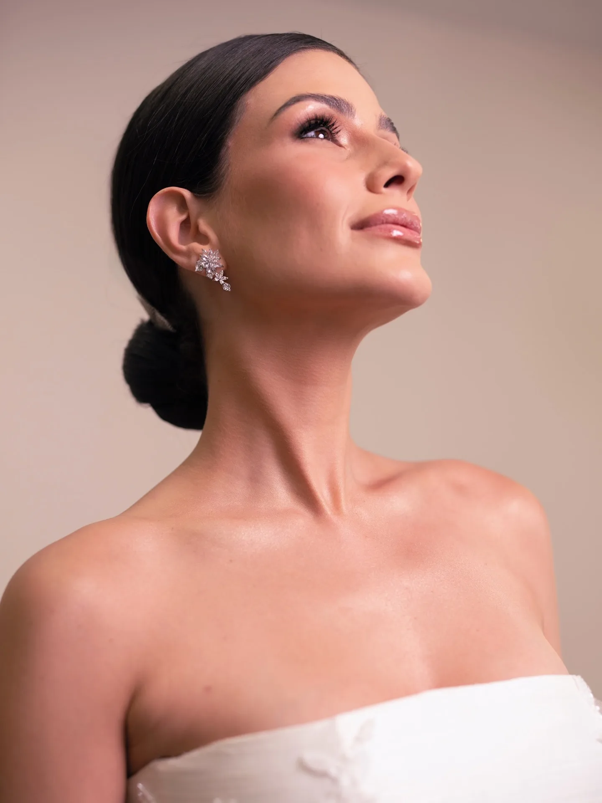
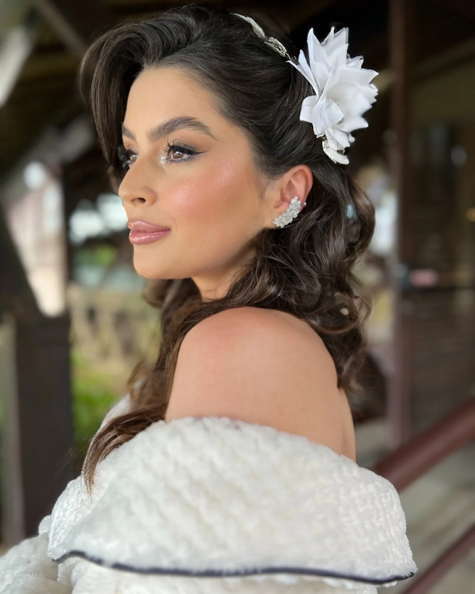
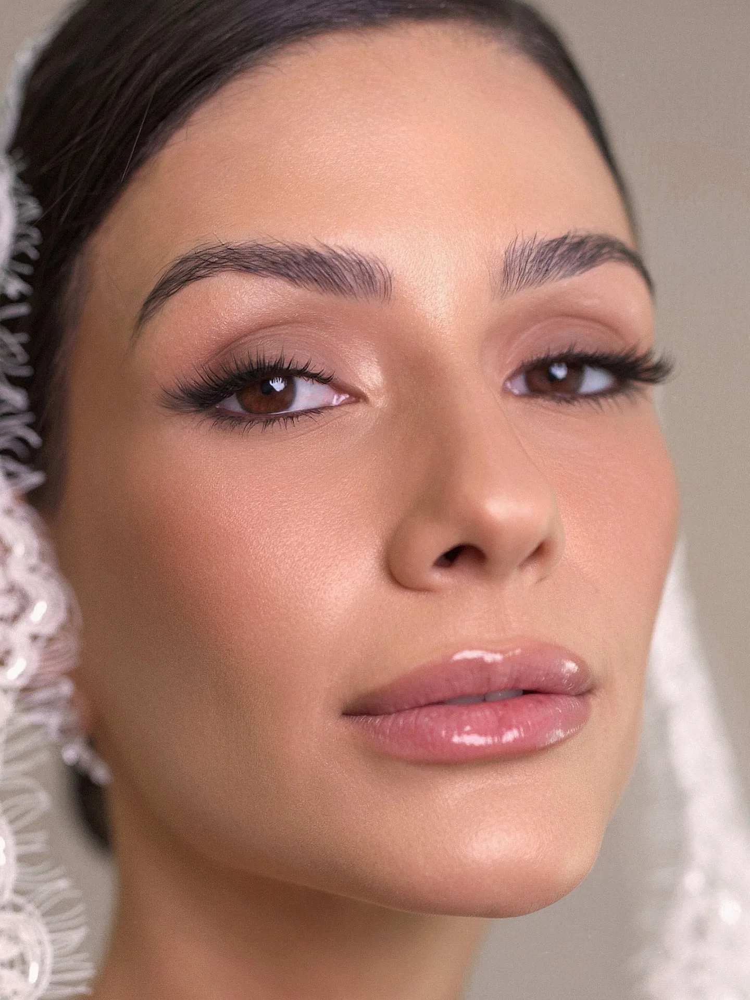
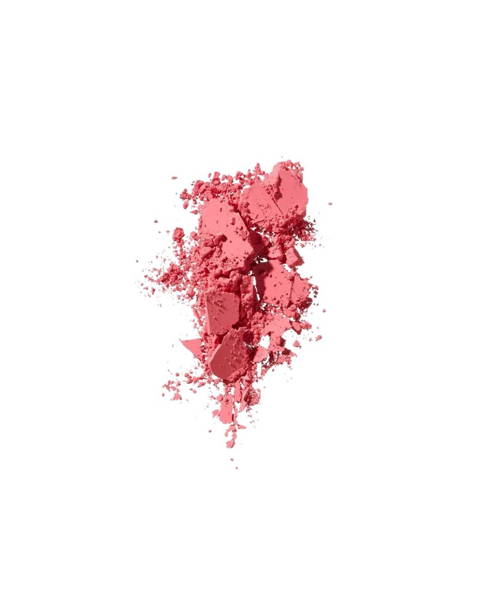
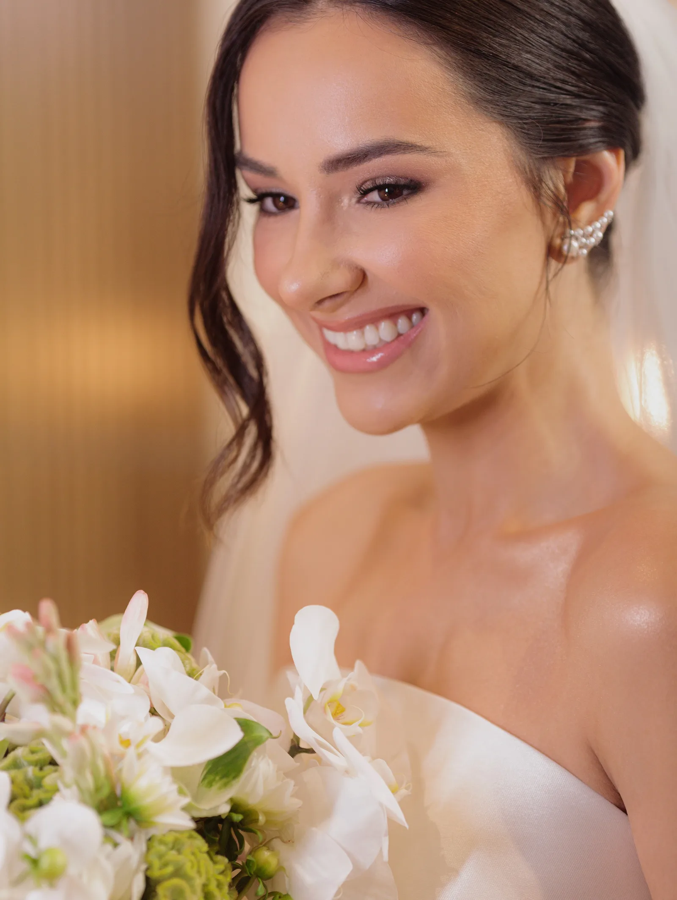
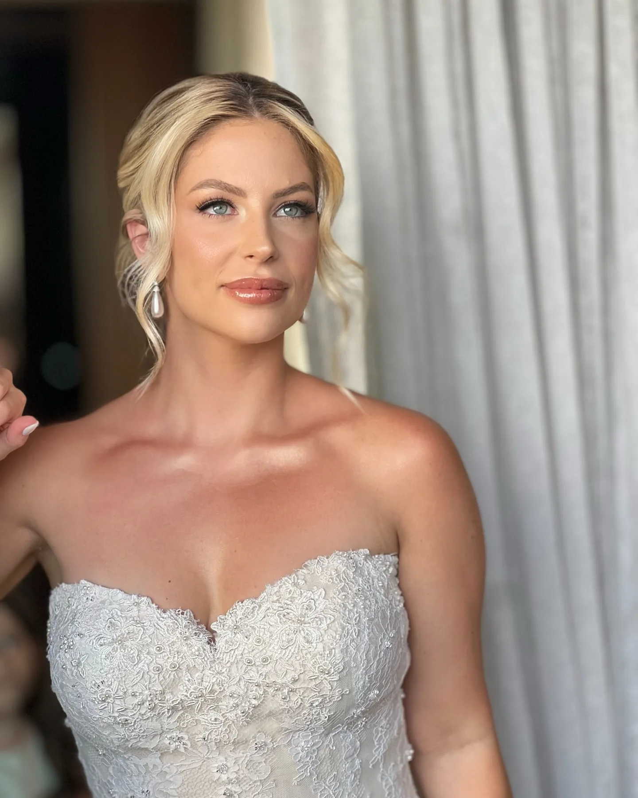
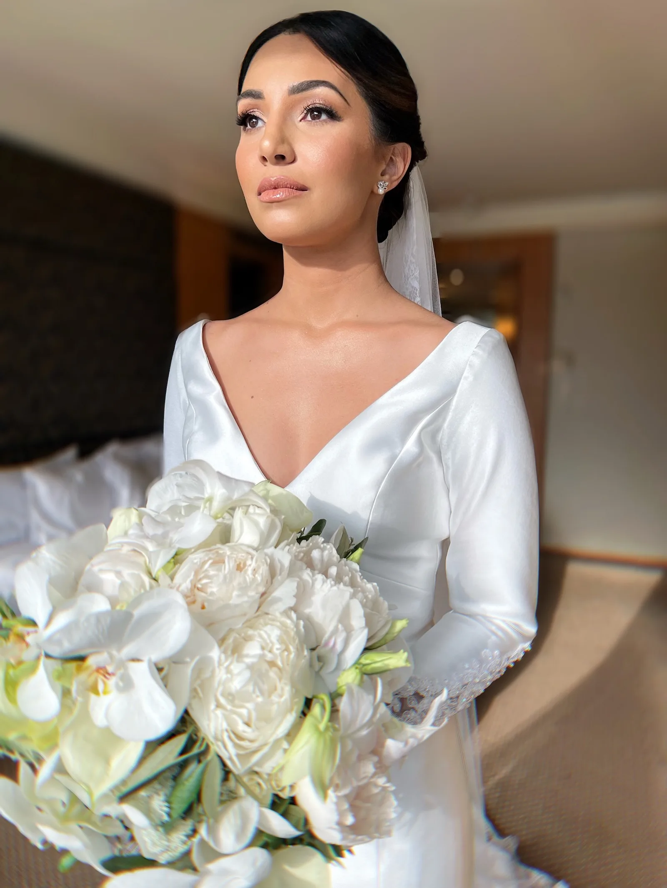
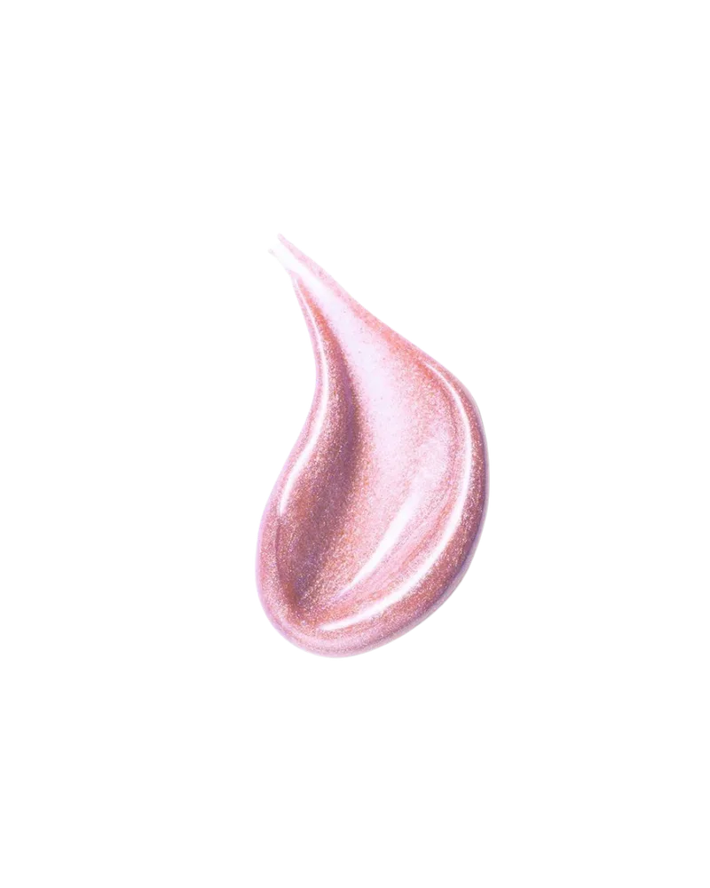

Leitura de expressão

- Formato do rosto e traços de destaque
- O que valorizar e o que suavizar
- Intensidade do olhar

Débora Machado
Você responde um questionário, me manda algumas fotos e eu faço a leitura do seu rosto, do seu tom e subtom de pele e do vestido que escolheu. Só depois a gente decide a maquiagem e o penteado. Por isso nenhuma noiva minha sai igual à outra.

Uma pista, em dez segundos
O teste é só uma pista. Na análise eu olho o rosto, a pele e o vestido juntos.

São cinco etapas. As três primeiras acontecem online, no seu tempo.
Você responde um questionário e me manda algumas fotos. A partir daí eu faço a leitura do seu rosto, da sua coloração pessoal (tom e subtom), do seu estilo, do vestido e da proposta do casamento. Tudo isso volta pra você num material feito só pra você.
Com a análise em mãos, a gente define os caminhos. Ganhou uma flor da costureira e ficou na dúvida se usa? Me manda. Eu te digo se ela conversa com o resto da produção e, se não conversar, te explico o porquê.
Um painel com tudo o que foi decidido: as técnicas de maquiagem e penteado que mais te favorecem, as cores, e as indicações de brinco, véu e grinalda. Muita noiva encaminha pra assessora e pro ateliê do vestido, porque ele organiza o visual inteiro.
É quando a gente valida tudo no seu rosto. Ajusto o que precisar, e você chega no dia sabendo exatamente como vai ficar.
Você só precisa sentar e aproveitar. O que sai dali não é só maquiagem e penteado, é uma imagem construída com intenção.
Essa parte quase nunca aparece. Antes do teste você já tem nas mãos a leitura do seu rosto e o moodboard, e cada dúvida a gente resolve conversando.
Leitura de expressão

Recriação do material. Os arquivos de cada noiva são pessoais.
Conversa recriada a partir de um atendimento real.

Vanessa Jansen · 28.02.26 Carla Quaglio
Carla Quaglio
Paula · Palácio dos Cedros Carolina Portas · 01.05.26
Carolina Portas · 01.05.26 Palácio Tangará · Equipe DM
Palácio Tangará · Equipe DM
mais uma noiva (6 a 9 no total)CONFIRMAR: autorização para nomes, local e data de cada noiva. A galeria precisa mostrar pele, cabelo e estilo bem diferentes.
Ver mais no Instagram @deboramachadomake debora-retrato.webp — retrato 3:4 da Débora (camisa branca, lenço)
debora-retrato.webp — retrato 3:4 da Débora (camisa branca, lenço)Comecei na publicidade e na fotografia. Foi ali que aprendi a olhar pra composição, luz e enquadramento, e esse olhar veio comigo quando a beleza virou o meu trabalho.
Hoje sou especializada em visagismo e colorimetria, e cuido de noivas em São Paulo e em casamentos pelo Brasil. Teve muito tempo em que precisei acreditar no meu trabalho antes de ele ser reconhecido. Ele foi, e hoje faço parte do Guia Constance Zahn.
O que não mudou: atendo uma noiva por dia, com atenção inteira pra ela. CONFIRMAR: continua só uma noiva por dia? E a Equipe DM?
DM.
Falar com a DéboraA Equipe DM é uma curadoria minha. Eu participo do planejamento, assino a beleza, acompanho e dirijo o teste presencial e garanto que cada profissional esteja alinhada à proposta criada pra você.
No dia, quem cuida de você é a equipe. Mas meu olhar continua em cada detalhe.
 servico-civil.webp — noiva no civil
servico-civil.webp — noiva no civil
A mesma análise, numa produção mais leve pro dia do cartório.
 servico-social.webp — beleza social: mãe, madrinhas
servico-social.webp — beleza social: mãe, madrinhas
Pra mãe, madrinhas e convidadas que querem estar em harmonia com a noiva. CONFIRMAR público
 servico-aula.webp — aula de automaquiagem
servico-aula.webp — aula de automaquiagem
Individual. Você aprende a se maquiar no dia a dia com a mesma lógica que usamos no casamento, pros seus próprios tons. CONFIRMAR: aberta ou só p/ noivas
“Dé, seu trabalho é sensacional! Com certeza vai muito além da produção da noiva no dia do casamento. O seu moodboard é surpreendente e muito certeiro, deu o toque final que faltava na minha produção. Com certeza você foi minha melhor escolha.”
Mayra Fagundes · noiva
CONFIRMAR: mais dois ou três depoimentos, com autorização das noivas.
Guia Constance Zahn
Indicada no Guia Constance Zahn em Beleza & Dia de Noiva e Destination Wedding. Atendo em São Paulo capital e viajo pra casamentos em todo o país.

Como atendo uma noiva por dia, o ideal é me chamar assim que a data estiver definida.
Sim. Faço casamentos em todo o Brasil e destination weddings. Os custos de viagem são combinados à parte. CONFIRMAR
Pode. A análise começa pelo seu rosto e pelo seu estilo, e o vestido entra no planejamento quando estiver definido. CONFIRMAR
Análise, planejamento e moodboard são online. O teste e o dia do casamento são presenciais.
CONFIRMAR: quantidade de testes e onde acontecem.
Sim, pela beleza social ou com a Equipe DM, dependendo do tamanho da produção. CONFIRMAR
Depende do formato, do local e de quantas pessoas vão se arrumar. Me manda a data e o local do casamento no WhatsApp que eu te envio as opções.
Me conta quando e onde vai ser. Eu te respondo com a disponibilidade e te explico como funciona cada etapa.
DM.
Consultar minha data